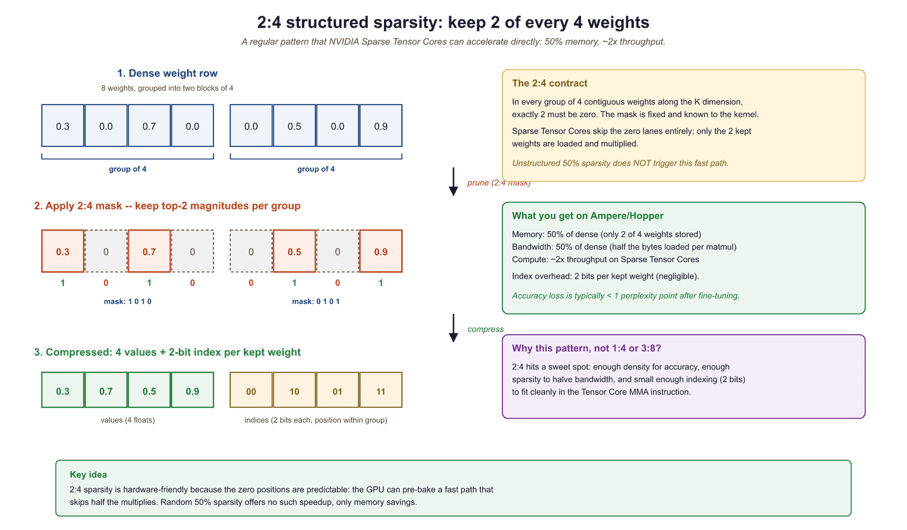

"A sculptor does not add marble to create a statue. She removes everything that is not the statue."
Quant, Elegantly Subtractive AI Agent
Pruning sits alongside quantization (Section 9.1) and speculative decoding (Section 9.4) as one of the three main levers for making LLM inference faster and cheaper. While quantization reduces the precision of each weight and speculative decoding reduces the number of serial forward passes, pruning reduces the total number of weights the model carries. These three techniques are largely orthogonal and can be combined. Understanding pruning completes your toolkit for inference optimization before moving on to practical API usage in Section 11.1.
Prerequisites
This section builds on the quantization techniques covered in Section 9.1: Model Quantization and the KV cache optimizations from Section 9.3: KV cache and Memory Optimization. Familiarity with transformer weight matrices from Section 3.3 will help you understand where pruning is applied.
Think of a large language model as an overpacked suitcase. You crammed everything in for the trip (Section 7.1), but you do not actually need most of it for any particular destination (task). Pruning is the art of removing the items you will never use. Unstructured pruning (mechanism in Section 9.7.2) removes individual socks and cables (individual weights), making the suitcase lighter but not physically smaller since you still need the same compartments. Structured pruning (mechanism in Section 9.7.3) removes entire compartments (rows, columns, attention heads), making the suitcase both lighter and smaller. The 2:4 sparsity pattern supported by NVIDIA hardware is like a packing rule: for every four item slots, exactly two must be empty, which the suitcase manufacturer (the GPU) has optimized around.
9.7.1 Why Pruning Matters for LLMs
Modern LLMs contain billions of parameters, yet research consistently shows that a large fraction of these weights contribute minimally to model output. The Lottery Ticket Hypothesis (Frankle & Carlin, 2019) demonstrated that dense networks contain sparse subnetworks that, when trained in isolation, match the full model's performance. For LLMs, this insight translates into a practical opportunity: we can remove 50% to 90% of weights with surprisingly little degradation in quality, yielding faster inference and lower memory consumption.
Pruning complements quantization, the technique covered in Section 9.1. While quantization reduces the number of bits per weight, pruning reduces the number of weights altogether. The two techniques are orthogonal and composable: you can prune a model and then quantize the remaining weights, achieving compression ratios that neither technique could reach alone.
Why most weights do not matter. Consider a 70B parameter model trained on trillions of tokens. During training, the model must handle every possible topic, language, and reasoning pattern in its training data. But at inference time, any given query activates only a small subset of the model's knowledge. The remaining weights are effectively dead code for that query. This is why Mixture-of-Experts architectures (discussed in Section 7.3) are so effective: they formalize this observation by routing each token to only a fraction of the model's parameters. Pruning achieves a similar effect after training, by permanently removing the weights that contribute least across a representative set of inputs. The connection to LoRA adapters (Section 19.1) is also worth noting: both pruning and LoRA exploit the fact that the effective dimensionality of the model's computation is much lower than the number of parameters suggests.
9.7.1.1 Pruning vs. Quantization vs. Distillation
| Technique | What It Reduces | Typical Compression | Quality Impact | Hardware Requirements |
|---|---|---|---|---|
| Quantization | Bits per weight | 2x to 4x | Low (at 4-bit) | General GPU support |
| Unstructured Pruning | Number of weights | 2x to 10x | Low to moderate | Sparse matrix libraries |
| Structured Pruning | Entire rows/columns/heads | 1.5x to 4x | Moderate | No special hardware needed |
| 2:4 Sparsity | Half the weights (pattern) | 2x | Low | NVIDIA Ampere+ GPUs |
| Distillation | Model architecture size | 2x to 20x | Variable | No special hardware needed |
9.7.2 Unstructured Pruning
Unstructured pruning sets individual weight values to zero without any constraint on their position within the weight matrix. This is the simplest and most flexible form of pruning: any weight in any position can be removed. The resulting weight matrix has the same shape as the original but contains many zeros (a sparse matrix). The challenge is that standard GPU hardware cannot efficiently skip over scattered zeros, so unstructured pruning often requires specialized sparse matrix libraries to translate sparsity into actual speedups.
"I pruned 50% of the weights, so inference should be 2x faster" is the most common disappointment with unstructured pruning. On a stock GPU running dense matrix multiplication, a weight of value 0 still costs the same FLOP as a weight of value 0.5; the hardware does not branch on the value. You get real wall-clock speedup only when the sparsity pattern matches a hardware feature (2:4 on Ampere+) or you switch to a sparse-aware kernel (DeepSparse on CPU, cuSPARSE on GPU). Memory savings, on the other hand, are real and immediate, which is why pruning is often paired with quantization for deployment.
9.7.2.1 Magnitude Pruning
The oldest and most intuitive pruning criterion is weight magnitude: remove the weights closest to zero. The logic is straightforward. A weight near zero multiplied by any activation produces a near-zero output, so removing it should have minimal effect. Magnitude pruning typically proceeds iteratively: prune a small percentage of weights, fine-tune the model briefly to recover quality, then prune again.
# Unstructured magnitude pruning: zero out the smallest 30% of weights
# in each Linear layer using PyTorch's built-in prune module.
import torch
import torch.nn.utils.prune as prune
# Load a pretrained model (using a small example for illustration)
from transformers import AutoModelForCausalLM
model = AutoModelForCausalLM.from_pretrained("facebook/opt-350m")
# Apply magnitude pruning to all linear layers
for name, module in model.named_modules():
if isinstance(module, torch.nn.Linear):
# Remove 50% of weights with smallest magnitude
prune.l1_unstructured(module, name="weight", amount=0.5)
# Check sparsity of a specific layer
layer = model.model.decoder.layers[0].self_attn.q_proj
total = layer.weight.nelement()
zeros = (layer.weight == 0).sum().item()
print(f"Sparsity: {zeros / total:.1%}")
# Sparsity: 50.0%
# Make pruning permanent (remove the reparameterization)
for name, module in model.named_modules():
if isinstance(module, torch.nn.Linear):
prune.remove(module, "weight")9.7.2.2 SparseGPT: One-Shot Pruning for Large Models
Iterative magnitude pruning requires multiple rounds of pruning and fine-tuning, which is prohibitively expensive for models with billions of parameters. SparseGPT (Frantar & Alistarh, 2023) solves this with a one-shot approach: it prunes the model in a single pass without any fine-tuning. The key idea is to compensate for each pruned weight by adjusting the remaining weights in the same row. SparseGPT frames this as a layer-wise sparse regression problem, solving for the optimal remaining weights given the pruning mask.
The algorithm processes each layer independently. For a weight matrix W and a calibration set of inputs X, SparseGPT minimizes the reconstruction error ||WX - W'X||, where W' is the pruned and adjusted weight matrix. Using an efficient solver based on the Hessian inverse (computed from the calibration data), SparseGPT can prune a 175-billion-parameter model in under 4 hours on a single GPU. At 50% unstructured sparsity, SparseGPT applied to LLaMA-65B increases perplexity by less than 0.5 points, a negligible degradation for most applications.
9.7.2.3 Wanda: Pruning Without Weight Updates
Wanda (Sun et al., 2024) takes an even simpler approach than SparseGPT. Instead of adjusting remaining weights after pruning, Wanda uses a pruning criterion that considers both the weight magnitude and the norm of the corresponding input activations. The importance score for weight w_ij is simply |w_ij| * ||x_j||, where ||x_j|| is the L2 norm of the j-th input feature computed over a small calibration set. Weights with low importance scores are pruned.
The intuition is elegant: a large weight connected to an input feature that is always near zero is less important than a small weight connected to a highly active feature. By incorporating activation statistics, Wanda captures the actual contribution of each weight during inference rather than relying on magnitude alone. Despite its simplicity (no weight updates, no iterative optimization), Wanda matches or approaches SparseGPT quality at 50% sparsity while running orders of magnitude faster.
# Activation-aware pruning: register a forward hook to measure per-neuron
# activation magnitude, then prune channels with the lowest average activation.
import torch
from transformers import AutoModelForCausalLM, AutoTokenizer
model_name = "facebook/opt-1.3b"
model = AutoModelForCausalLM.from_pretrained(model_name, torch_dtype=torch.float16)
tokenizer = AutoTokenizer.from_pretrained(model_name)
# Collect activation norms from calibration data
calibration_texts = [
"The quick brown fox jumps over the lazy dog.",
"Machine learning models require careful optimization.",
# ... more calibration examples (typically 128 samples)
]
activation_norms = {}
def hook_fn(name):
def hook(module, input, output):
# input[0] shape: (batch, seq_len, hidden_dim)
x = input[0].detach().float()
norm = x.norm(dim=(0, 1)) # norm across batch and sequence
if name in activation_norms:
activation_norms[name] += norm
else:
activation_norms[name] = norm
return hook
# Register hooks on all linear layers
hooks = []
for name, module in model.named_modules():
if isinstance(module, torch.nn.Linear):
hooks.append(module.register_forward_hook(hook_fn(name)))
# Run calibration data through the model
for text in calibration_texts:
inputs = tokenizer(text, return_tensors="pt")
with torch.no_grad():
model(**inputs)
# Remove hooks
for h in hooks:
h.remove()
# Compute Wanda importance scores and prune
sparsity = 0.5
for name, module in model.named_modules():
if isinstance(module, torch.nn.Linear) and name in activation_norms:
W = module.weight.data.float()
# Importance = |weight| * activation_norm
importance = W.abs() * activation_norms[name].unsqueeze(0)
# Find threshold for desired sparsity
threshold = torch.kthvalue(
importance.flatten(),
int(sparsity * importance.numel())
).values
# Create and apply pruning mask
mask = importance > threshold
module.weight.data *= mask.half()
print(f"{name}: pruned {(~mask).sum().item()} / {mask.numel()} weights")9.7.3 Structured Pruning
Structured pruning removes entire structural units from the model: rows or columns of weight matrices, entire attention heads, or even full transformer layers. Unlike unstructured pruning, structured pruning produces a genuinely smaller model that runs faster on standard hardware without any special sparse matrix support. The trade-off is that structured pruning is coarser-grained, so it typically achieves less compression at a given quality level compared to unstructured approaches.
Figure 9.7.1b contrasts the two strategies on the same weight matrix. Unstructured pruning scatters zeros throughout a matrix that keeps its original shape, so it needs a sparse-aware kernel to turn those zeros into speed; structured pruning deletes whole rows or columns, yielding a physically smaller dense matrix that any GPU runs faster as-is.
![Unstructured versus structured pruning of the same weight matrix. On the left, unstructured pruning zeros out individual weights scattered across the matrix; the matrix keeps its original dimensions but is now sparse, and standard dense hardware still does the same work, so a sparse kernel is required for any speedup. On the right, structured pruning removes entire rows and columns, producing a smaller dense matrix that runs faster on ordinary hardware with no special support, at the cost of coarser granularity.](../../images/svg-rasterized/png/svg_c5b864a9813b4ba4.png)
9.7.3.1 What Can Be Pruned
- Attention heads: Research by Michel et al. (2019) showed that many attention heads can be removed after training with minimal quality loss. In some models, over 40% of heads are redundant.
- Feed-forward neurons: Entire rows of the intermediate softmax can be removed. Since the FFN is typically the largest component of each transformer block (4x the hidden dimension), this offers significant compression.
- Transformer layers: For very deep models, removing entire layers (sometimes called layer pruning or depth pruning) can reduce both memory and latency substantially. Models like LLaMA-2-70B can lose several layers with minimal degradation on many benchmarks.
- Embedding dimensions: Reducing the hidden dimension uniformly across the model, sometimes called width pruning, produces a model that is architecturally identical to a smaller variant.
9.7.3.2 Structured Pruning with Importance Scores
The key question in structured pruning is how to score the importance of each structural unit. Common approaches include:
- Taylor expansion: Approximate the change in loss from removing a unit using a first-order Taylor expansion. The importance score for a unit with parameters θ is |θ · ∇θL|, which can be computed from a single backward pass over calibration data.
- Activation norm: Score each neuron or head by the average magnitude of its output activations. Units that consistently produce near-zero outputs are candidates for removal.
- Cosine similarity: Identify and merge redundant heads by measuring the cosine similarity between their output representations. Highly similar heads are likely redundant.
Choose unstructured pruning when you have access to sparse matrix acceleration (NVIDIA Ampere+ GPUs with 2:4 sparsity, or DeepSparse engine for CPU inference) and want maximum compression with minimal quality loss. Choose structured pruning when you need a smaller model that runs on standard hardware without special library support, or when your deployment target (mobile, edge, CPU) does not support sparse kernels. In practice, many teams use structured pruning to get a smaller model and then apply quantization on top.
9.7.4 NVIDIA 2:4 Structured Sparsity
NVIDIA's Ampere architecture (A100 and newer GPUs) introduced hardware support for a specific sparsity pattern called 2:4 structured sparsity. The rule is simple: in every group of 4 consecutive weights, exactly 2 must be zero. This 50% sparsity pattern is restrictive compared to arbitrary unstructured pruning, but it has a crucial advantage: the GPU's Sparse Tensor Cores can process 2:4 sparse matrices at nearly 2x the throughput of dense matrices with no software overhead.
9.7.4.1 How 2:4 Sparsity Works at the Hardware Level
The GPU stores a 2:4 sparse matrix using two components: a compressed data array containing only the non-zero values (half the original size) and a small metadata array encoding which 2 of the 4 positions in each group are non-zero (2 bits per group). During matrix multiplication, the Sparse Tensor Core uses the metadata to select the correct input activations to multiply with the compressed weights, skipping the zero positions entirely. This selection happens in hardware, adding no software overhead and requiring no changes to the surrounding computation.

9.7.4.2 Applying 2:4 Sparsity in Practice
NVIDIA's ASP (Automatic Sparsity) library makes it straightforward to apply 2:4 sparsity during fine-tuning. The typical workflow is: (1) start from a dense pretrained model, (2) compute importance scores (magnitude or Wanda-style), (3) apply the 2:4 pruning mask, and (4) fine-tune for a few hundred steps to recover quality. The fine-tuning step is important because the 2:4 constraint forces pruning decisions at a coarser granularity than optimal unstructured pruning, so the model benefits from adapting to the specific sparsity pattern.
# NVIDIA ASP (Automatic Sparsity): apply 2:4 structured sparsity to all
# Linear layers, enabling hardware-accelerated sparse matrix multiplication.
import torch
from transformers import AutoModelForCausalLM
# NVIDIA's Automatic Sparsity library
# pip install nvidia-pyindex asp
from apex.contrib.sparsity import ASP
model = AutoModelForCausalLM.from_pretrained(
"meta-llama/Llama-2-7b-hf",
torch_dtype=torch.float16,
device_map="auto"
)
optimizer = torch.optim.AdamW(model.parameters(), lr=1e-5)
# Initialize ASP: analyzes model layers for 2:4 compatibility
ASP.init_model_for_pruning(
model,
mask_calculator="m4n2_1d", # 2:4 pattern (2 non-zero per 4)
verbosity=2, # show which layers are pruned
whitelist=[torch.nn.Linear], # only prune linear layers
allow_recompute_mask=False # lock mask after initial computation
)
# Initialize optimizer with ASP awareness
ASP.init_optimizer_for_pruning(optimizer)
# Compute and apply the 2:4 pruning mask (one-shot)
ASP.compute_sparse_masks()
# Fine-tune for a few hundred steps to recover quality
# The mask is applied automatically during forward/backward passes
for step, batch in enumerate(calibration_dataloader):
outputs = model(**batch)
loss = outputs.loss
loss.backward()
optimizer.step()
optimizer.zero_grad()
if step >= 500:
break
print("2:4 sparse model ready for Sparse Tensor Core inference")2:4 structured sparsity acceleration is only available on NVIDIA Ampere (A100), Ada Lovelace (L40, RTX 4090), and Hopper (H100) GPUs. On older GPUs, the sparse matrix is still valid but will not run faster than a dense matrix since the hardware lacks Sparse Tensor Cores. Always verify your deployment target supports this feature before investing in 2:4 sparsity pipelines.
9.7.5 Pruning + Quantization: The Compression Stack
Pruning and quantization target different axes of model compression and combine naturally. A practical compression pipeline might look like this: (1) apply SparseGPT or Wanda at 50% sparsity, (2) quantize the remaining weights to 4-bit using GPTQ or AWQ, and (3) deploy with a runtime that supports both sparse and quantized operations. The combined compression can reach 8x to 16x reduction in memory footprint. This makes otherwise impractical models viable for the hybrid ML/LLM architectures discussed in Chapter 13, where a compressed LLM runs alongside specialized smaller models.
9.7.5.1 Combining SparseGPT with GPTQ
The SparseGPT and GPTQ algorithms share the same mathematical framework (layer-wise optimal weight adjustment using the Hessian inverse), so they can be combined into a single pass. The joint algorithm first determines the pruning mask using the Wanda or magnitude criterion, then jointly optimizes the quantization grid and the remaining weight values to minimize reconstruction error. Knowledge distillation provides yet another compression axis that can be layered on top of pruning and quantization. This joint optimization produces better results than applying pruning and quantization sequentially because the quantization step can compensate for pruning errors and vice versa.
| Configuration | Memory (7B Model) | Perplexity (WikiText-2) | Tokens/sec (A100) |
|---|---|---|---|
| Dense FP16 | 14 GB | 5.68 | ~80 |
| 50% Sparse FP16 | ~7 GB | 5.72 | ~130 |
| Dense INT4 (GPTQ) | ~3.5 GB | 5.85 | ~160 |
| 50% Sparse + INT4 | ~1.8 GB | 6.10 | ~220 |
| 2:4 Sparse + INT8 | ~3.5 GB | 5.78 | ~190 |
There is a point beyond which additional compression degrades quality too much to be useful. For most 7B-class models, the sweet spot is 50% unstructured sparsity combined with 4-bit quantization, or 2:4 structured sparsity combined with 8-bit quantization. Pushing beyond these levels (for example, 75% sparsity with 3-bit quantization) typically causes noticeable degradation on reasoning and multi-step tasks, even when perplexity numbers appear acceptable.
9.7.6 When to Prune vs. Quantize
Choosing between pruning and quantization (or using both) depends on your deployment constraints, hardware capabilities, and quality requirements. Here is a practical decision framework:
- Memory-constrained, standard GPU: Start with quantization (4-bit GPTQ or AWQ). This gives the best compression-to-quality ratio on hardware without sparse kernel support.
- Latency-constrained, NVIDIA Ampere+: Apply 2:4 structured sparsity for a nearly free 2x throughput gain, then add INT8 quantization. This maximizes throughput while maintaining quality.
- CPU or edge deployment: Use structured pruning to create a genuinely smaller model (fewer attention heads, narrower FFN layers), then quantize to INT8. The Neural Magic DeepSparse engine can also accelerate unstructured sparsity on CPUs.
- Maximum compression needed: Apply SparseGPT at 50% sparsity followed by GPTQ 4-bit quantization. This stacks both techniques for 8x+ compression.
- Quality is paramount: Use 2:4 structured sparsity alone (the most conservative pruning option) or skip pruning entirely and rely solely on quantization at higher bit-widths (8-bit or 6-bit).
Consider a startup deploying a 7B-parameter model for customer support on a single NVIDIA A100 GPU. The dense FP16 model requires 14 GB and serves about 80 tokens per second. By applying Wanda at 50% sparsity (30 minutes of compute on calibration data) followed by GPTQ 4-bit quantization, the model shrinks to approximately 1.8 GB, allowing the team to serve four model replicas on the same GPU. Throughput jumps to roughly 220 tokens per second per replica. The perplexity increase (from 5.68 to 6.10 on WikiText-2) is imperceptible in customer-facing responses. This combination of pruning and quantization turned a single-instance deployment into a high-availability service without purchasing additional hardware.
The human brain operates with extreme sparsity: at any given moment, only about 1% to 5% of neurons are actively firing. The brain achieves its remarkable efficiency not by using all of its neurons all the time, but by activating the right sparse subset for each task. Mixture-of-experts architectures (covered in Section 7.3) take inspiration from this principle, though explicit weight pruning is a more direct form of sparsity.
- Unstructured pruning (SparseGPT, Wanda) can remove 50%+ of weights with minimal quality loss, but requires sparse matrix support for actual speedups.
- Structured pruning removes entire attention heads, FFN neurons, or layers, producing genuinely smaller models that accelerate on any hardware.
- 2:4 structured sparsity on NVIDIA Ampere+ GPUs provides a near-free 2x throughput improvement with a fixed 50% sparsity pattern enforced in hardware.
- Pruning and quantization are complementary: combine 50% sparsity with 4-bit quantization for up to 8x total compression.
- Wanda offers the best simplicity-to-quality tradeoff for one-shot pruning, requiring no weight updates and matching SparseGPT on many benchmarks.
- Choose based on hardware: 2:4 sparsity for NVIDIA GPUs, structured pruning for CPU/edge, unstructured + quantization for maximum compression.
The intersection of pruning and training is an active research area. Pruning-aware pretraining integrates sparsity constraints during the pretraining phase itself, potentially producing models that are sparse from birth rather than pruned after the fact. The PowerInfer framework demonstrates that activation sparsity (dynamically skipping neurons with near-zero activations at runtime) can achieve 10x speedups on consumer GPUs by offloading inactive neurons to CPU memory. Meanwhile, research on N:M sparsity beyond 2:4 explores patterns like 4:8 or 1:4 that offer different compression-quality tradeoffs, with hardware support expected in future GPU architectures.
Show Answer
Unstructured pruning removes individual weights scattered throughout the model, creating a sparse weight matrix that requires specialized sparse matrix libraries (such as DeepSparse) to realize speedups, since the GPU still needs to process the same shaped tensors. Structured pruning removes entire rows, columns, attention heads, or layers, producing a genuinely smaller dense model that runs faster on any standard hardware without special sparse-math support.
Show Answer
The 2:4 sparsity pattern requires that exactly 2 out of every 4 contiguous weights are zero. NVIDIA's Sparse Tensor Cores on Ampere (and later) architectures are designed to exploit this fixed pattern at the hardware level: they skip the zero multiplications and compress the indices, achieving roughly 2x throughput on matrix multiplications with minimal quality degradation. Because the sparsity pattern is regular and hardware-aware, the GPU can schedule operations efficiently without the overhead of general sparse indexing.
Show Answer
At FP16, a 70B model requires roughly 140 GB of memory. A combined strategy could proceed in two steps. First, apply 50% unstructured pruning using Wanda or SparseGPT, halving the effective parameter count to 35B (approximately 70 GB at FP16). Second, apply 4-bit quantization (GPTQ or AWQ) to the pruned model, reducing each remaining weight from 16 bits to 4 bits, which yields roughly 17.5 GB. This fits within 24 GB with room for the KV cache and operating overhead. The total compression ratio is approximately 8x. In practice, the quality impact is modest: 50% sparsity with Wanda typically adds less than 1 perplexity point, and 4-bit quantization adds another small increment.
Show Answer
The Lottery Ticket Hypothesis (Frankle and Carlin, 2019) provides theoretical justification for pruning by demonstrating that within any large, randomly initialized dense network, there exist sparse subnetworks ("winning tickets") that, when trained in isolation, achieve comparable accuracy to the full model. For LLMs, this suggests that the billions of parameters in a pretrained model contain substantial redundancy: many weights contribute little to the final output. Practical pruning methods like SparseGPT and Wanda exploit this insight by identifying and removing low-importance weights after pretraining, achieving 50% to 90% sparsity with surprisingly small quality losses.
Exercises
Compare vLLM, TGI (Text Generation Inference), and TensorRT-LLM as LLM serving frameworks. For each, identify one key strength and one limitation.
Answer Sketch
vLLM: strength is PagedAttention for memory-efficient serving and high throughput. Limitation: focused on NVIDIA GPUs, limited custom model support. TGI (Hugging Face): strength is tight integration with the Hugging Face ecosystem and easy model loading. Limitation: lower raw throughput than vLLM for high-concurrency scenarios. TensorRT-LLM (NVIDIA): strength is the highest single-GPU performance through aggressive kernel optimization. Limitation: model conversion is complex and not all architectures are supported. For most deployments: vLLM for highest throughput, TGI for easiest setup, TensorRT-LLM for maximum single-request performance.
Why is standard round-robin load balancing suboptimal for LLM serving? What request properties should an LLM-aware load balancer consider?
Answer Sketch
Round-robin assigns requests evenly regardless of their computational cost. LLM requests vary enormously: a 10-token response takes 50x less compute than a 500-token response, and a request with a 10K token prompt has a much heavier prefill than one with 100 tokens. LLM-aware load balancing should consider: (1) estimated output length (based on prompt type or request metadata). (2) Current KV cache utilization per GPU (avoid overloading memory-constrained GPUs). (3) Prompt length (long prefills should go to less-loaded GPUs). (4) Request priority (low-latency interactive vs. high-latency batch). Some systems use a 'least tokens outstanding' policy rather than least requests.
Compare three batching strategies for LLM serving: (1) static batching (fixed batch size, wait for batch to fill), (2) dynamic batching (add requests up to a timeout), and (3) continuous batching (add/remove requests at every step). Quantify the throughput difference.
Answer Sketch
Static: simple but wasteful. If batch size is 8 and 5 requests arrive, either wait (adding latency) or waste 3 slots. Short and long requests in the same batch mean short ones wait for the longest. Dynamic: improves over static by using a timeout to form batches of variable size. Reduces waiting but still has the 'short waits for long' problem. Continuous: optimal utilization because finished requests are immediately replaced. A slot never sits idle while the queue is non-empty. Throughput comparison (approximate): if average request length varies 5x, continuous batching achieves ~2 to 3x higher throughput than static batching because GPU utilization stays near 100% instead of fluctuating between 20% and 100%.
Design an auto-scaling policy for an LLM serving cluster. Define: the metrics to monitor (beyond just CPU/GPU utilization), the scaling triggers, and cool-down periods. Implement the decision logic in Python.
Answer Sketch
Metrics: (1) Time-to-first-token (TTFT) p95: measures queue wait + prefill. (2) Token throughput per GPU. (3) KV cache utilization (fraction of available memory used). (4) Request queue depth. Scale-up trigger: TTFT p95 > 2s OR queue depth > 50 requests for > 30 seconds. Scale-down trigger: all GPUs below 30% utilization for > 10 minutes. Cool-down: 5 minutes between scale events to avoid oscillation. Implementation: poll metrics every 30 seconds, compute rolling averages, apply hysteresis. LLM-specific consideration: new instances take 2 to 5 minutes to load model weights, so scale up proactively based on traffic trends.
An organization spends $500K/month on LLM inference. Describe five concrete strategies to reduce costs by 50% or more without significantly degrading user experience.
Answer Sketch
1. Prompt caching: if 60% of requests share a common system prompt, caching saves 60% of prefill compute. Estimated savings: 15 to 20%. 2. Model routing: route simple queries to a 7B model ($0.001/query) instead of the 70B model ($0.01/query). If 70% of queries are simple, savings: 50 to 60%. 3. Quantization: INT4 quantization reduces serving hardware by ~3x. Savings: ~60% on GPU costs. 4. Response length optimization: tune max_tokens and stop sequences to avoid unnecessarily long responses. Savings: 10 to 30%. 5. Semantic caching: cache common query-response pairs. If 20% of queries are near-duplicates, savings: ~15%. Combined, these strategies can often reduce costs by 70%+ while maintaining quality for most users.
What Comes Next
In the next section, Section 9.8: Test-Time Compute and Reasoning Models, we explore how reasoning models deliberately spend more compute at inference time to achieve better results on challenging tasks.
For the quantization and serving foundations these benchmarks depend on, see Section 9.1. For how architectural differences across model families change the latency curve, see Section 7.3. For hybrid pipelines that combine LLM inference with classical ML, see Chapter 13.